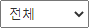
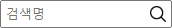
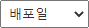
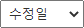
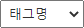

이아이랩에서는 퍼블리싱리소스(JS, CSS)에 대한 별도의 버전관리를 하고 있습니다.
수정이 필요한 경우 새로운 파일을 생성하여 별도로 관리해주시기 바랍니다.
이아이랩 관리 리소스는 접두어 'ui_'로 표시함.
ex> (ui_common.css, ui_common.js)
- : 활성화페이지 이동
- : 화면목록 진척률 간단히 보기 on/off
- : 화면목록 간단히 보기 on/off
- 메뉴 별 산출물 정보 : (완료 본/총 본), 진척률 %
- 클릭 시 화면목록 이동기능
-  : 검색명으로 화면검색(전체/화면명/파일명/경로명으로 분류검색)
-  : 배포일로 화면검색
-  : 수정일로 화면검색
-  : 태그명으로 화면검색
- YYYY-MM-DD : 이전 릴리즈
- YYYY-MM-DD : 최근 릴리즈
- YYYY-MM-DD : 삭제
- 텍스트 : 기본 제공 화면 or 기타정보
- 텍스트 : 화면에 대한 정보를 간단한 태그로 제공
상위 화면과 연관된 분기 화면(검색 결과 없음 등)
수정 #건 : 수정 건수 클릭 시 전체 수정이력 확인가능
※ 화면명/파일명 도구
- 화면열기 : 화면명 마우스 왼쪽 클릭
- 새창열기 : 화면명 마우스 왼쪽 더블클릭
- 파일명 복사 : 파일명 마우스 왼쪽 클릭
- 화면명 복사 : 화면명 [ ` ] + 왼쪽 클릭
- 파일경로 복사 : 파일명 마우스 오른쪽 클릭
- 화면경로 복사 : 화면명 마우스 오른쪽 클릭